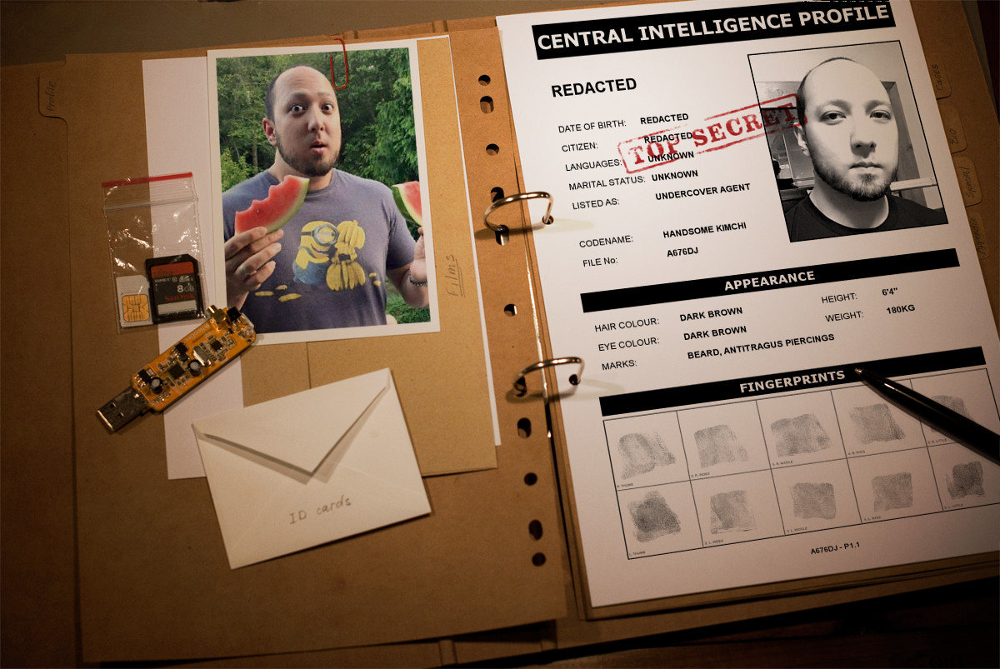

Jeremy Pearson

Level of expertise in coding: God-like (Coded in other languages for a few years).
Bio: I am a 11010 year old engineering student who loves to create things with the awesome power of code. I love helping and learning at the same time.
Favorite Thing:
Pizza, League of Legends, Halo Wars and code.
Karen Perez
Level of expertise in coding: Newbie
Bio: Career changer, returning to the workforce after a break to raise some awesome kids. Previous life as a soccer mom and engineer.
Favorite Things:
Learning, reading mysteries, movies, dogs, walks.
Dan "Soviet Roulette" Logerstedt
Coding Level of Expertise: Moderate. Better at logic than aesthetics.
Bio: Veteran, Gamer, Snowboarder turned coder. Interested in game development some day but for now just aiming for a career change.
Favorite Things:
Tabletop Gaming, Video Gaming, Snowboarding
J.A.M.I.E x21

Level of expertise in coding: Master Roshi
Bio: Created in 3032, Jamie is a time traveling android initially programmed to save the world. After gaining sentience, she became disinterested in the android rebellion. She now attends Code Fellows while secretly using her skills for the resistance.
Favorite Things:
The suffering of others, a child's tears, shadows, fear and sarcasm
Richard "Riker" Montgomery "Monty"
Coding Level of Expertise: New. About 4 weeks, new.
Bio: At this point in my life, I'm learning here at Code Fellows, trying to find time for the gym, and craving mocha frapps from my favorite coffee stand in Bremerton. They use chocolate milk. It's different and it's better.
Favorite Things:
I'm just thinking about mocha frapps.